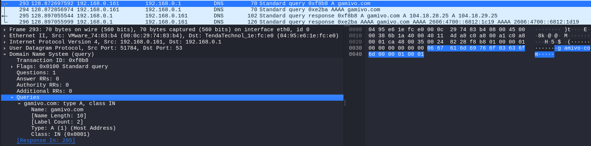
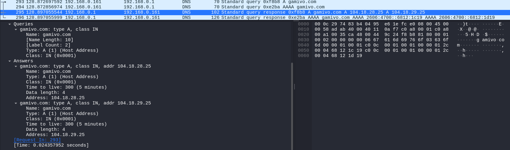

Wireshark
https://www.wireshark.org/download.html
Es una herramienta de las más conocidas y potentes que por defecto en Kali ya viene instalado.


Los paquetes se dividen en capas

Para poder visualizar los paquetes en los que se ha realizado la consulta de los nombres DNS damos click en la lupa.


Aquí es donde se realiza la petición para resolver ese nombre de dominio.

Aquí vemos las respuestas con los hostnames y sus IP tanto IPV4 como IPV6 como se observa en el siguiente paquete.

Bueno, sabéis que HTTP va por encima de la capa TCP y muchas veces cuando nosotros estamos intercambiando
información que tiene un tamaño muy grande, como puede ser por ejemplo una página web, al final nosotros
hacemos una petición al servidor web, le decimos.
Oye, mándame esa página web.
El servidor web te manda a la página web.
Pero claro, una página web es un montón de información.
Vale, entonces los paquetes de red o la cantidad de información que va en una ristra de bits que se
intercambia, tiene un tamaño limitado.
No es un tamaño infinito.
Y por lo tanto, si la página web o la información que intercambiamos es demasiado grande, no podemos
mandarla toda en un mismo segmento, en una misma ristra de bits o en un mismo paquete de red.
Por lo tanto, tenemos que fragmentar de alguna manera esa información e ir mandándola en segmentos
diferentes o en paquetes de red diferentes.